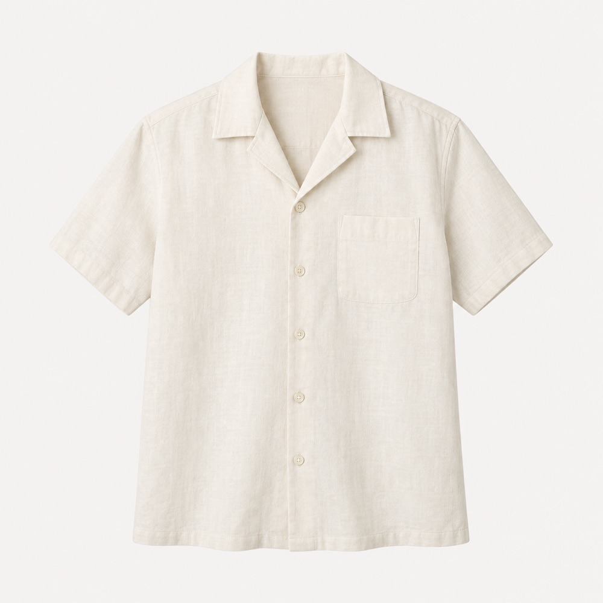
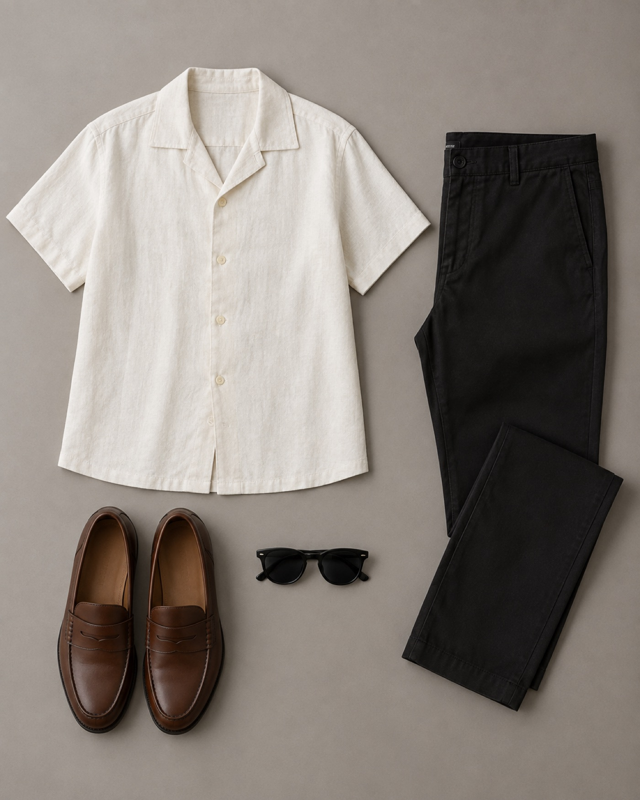

01 · Discover
Start with the look you saved.
Choose a garment in a screenshot, describe what matters, and explore similar pieces. The current prototype separates sample matches from live provider-backed results.
Image-first discovery
Better Wardrobe connects the looks you discover with the pieces you own. Start with an image, find a direction, and keep your personal style close.


Choose a garment in a screenshot, describe what matters, and explore similar pieces. The current prototype separates sample matches from live provider-backed results.
The prototype focuses on real inputs and clear boundaries. Sample shopping cards are labeled. Provider-dependent search is separate. Community leads are not presented as verified matches.